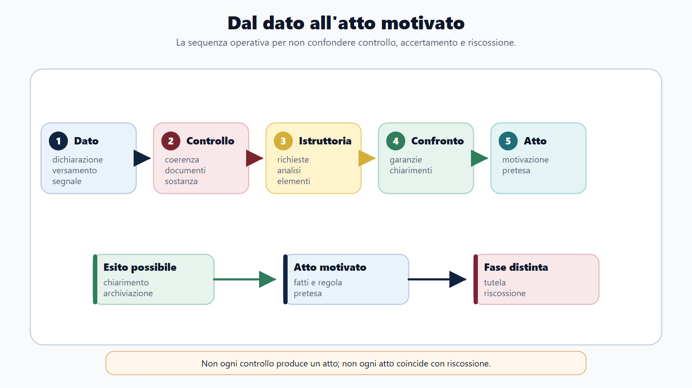
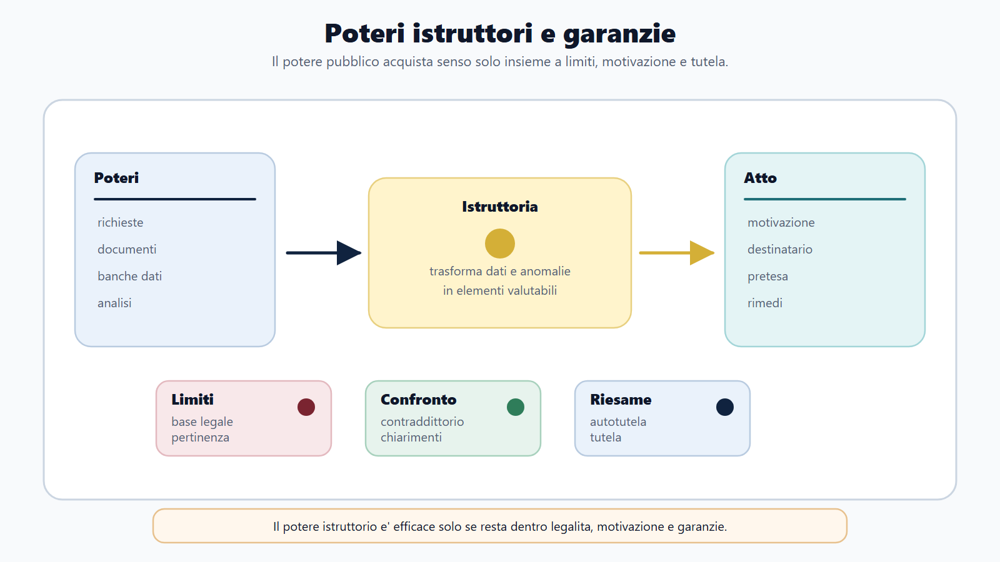
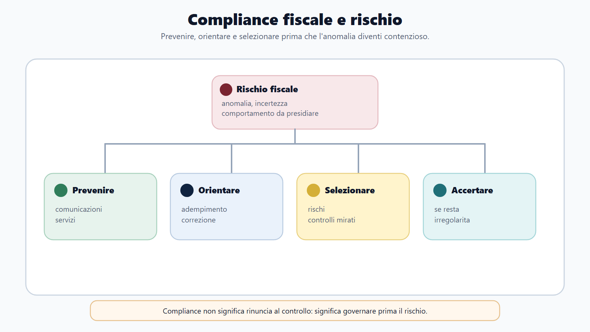
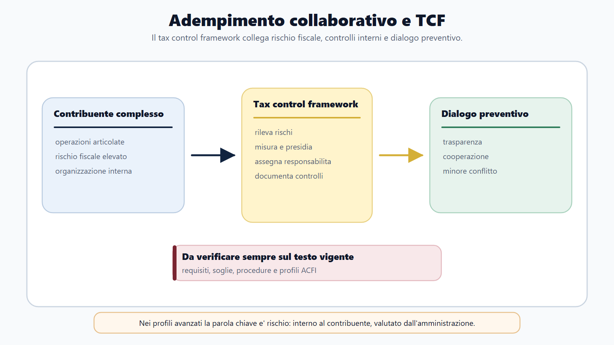

VOL-03 · Capitolo 20
M-FC02
Accertamento, controlli
e compliance fiscale
L’accertamento tributario non è un singolo atto che compare all’improvviso. È il possibile esito di un percorso: l’amministrazione seleziona una posizione, acquisisce e valuta dati, esercita poteri istruttori, confronta le risultanze con quanto dichiarato e, quando ne ricorrono i presupposti, formalizza una pretesa motivata.
01 · Il problema in prova
Il dato non è ancora una pretesa
La difficoltà non sta solo nel numero delle norme. Sta nel tenere separati passaggi che il linguaggio comune confonde: anomalia, controllo, istruttoria, comunicazione, schema di atto, accertamento, definizione e riscossione. Ogni potere deve avere una fonte, una finalità e un limite. Il contribuente non è un destinatario muto.
Che cos’è
Una prospettiva amministrativa del controllo fiscale. L’accertamento è l’atto che forma o rettifica la pretesa quando l’istruttoria lo consente. La compliance affianca il controllo per prevenire l’inadempimento, senza indulgenza verso le violazioni.
A che serve in prova
A distinguere controllo automatico, formale e sostanziale; a ricostruire selezione-istruttoria-contraddittorio-atto; a separare accertamento, definizione e riscossione; a descrivere adempimento collaborativo e tax control framework.
Il sistema rileva una differenza, quindi emette l’accertamento.
È la scorciatoia da rifiutare. Tra il dato e l’atto possono collocarsi controlli automatizzati, richieste documentali, verifiche, interlocuzioni e valutazioni giuridiche. La selezione individua le situazioni da esaminare, senza dimostrare l’evasione.
02 · BANDO
Cinque decisioni su questo capitolo
La mappa evita di studiare l’accertamento come una raccolta di articoli scollegati.
| Domanda operativa | Output | |
|---|---|---|
| B — Bando | Quali forme di controllo, accertamento o compliance sono richiamate? | Parole selettive del programma. |
| A — Aree | Dichiarazione, istruttoria, atto, garanzia o rischio? | Mappa area/fonte/funzione. |
| N — Nuclei | Quali passaggi devo distinguere? | Sequenza controllo-atto-riscossione. |
| D — Diario | Dove confondo comunicazione, accertamento e cartella? | Registro degli errori procedurali. |
| O — Output | Quiz, procedura o caso? | Risposta da due minuti e checklist istruttoria. |
03 · Sequenza
Dal dato all’atto, non dall’avviso all’indietro
L’errore più comune è raccontare l’accertamento partendo dall’avviso. In questo modo scompaiono selezione, istruttoria, prova e contraddittorio. La sequenza descrive il modello dell’accertamento sostanziale soggetto al contraddittorio, non una regola indistinta per qualunque comunicazione fiscale.

Selezione, istruttoria, contraddittorio, atto e raccordo con la riscossione.
04 · Tipi di controllo
Automatico, formale, sostanziale
Le tre categorie ordinano lo studio se non diventano sinonimi. La classificazione serve anche per il contraddittorio: non tutti gli atti e non tutte le comunicazioni seguono lo stesso regime. Prima di applicare una garanzia si identifica la natura dell’attività e l’atto finale.
| Tipo | Oggetto prevalente | Esito possibile | Errore tipico |
|---|---|---|---|
| Automatico | Coerenza e liquidazione dei dati dichiarati. | Comunicazione delle risultanze o regolarizzazione. | Chiamarlo sempre accertamento sostanziale. |
| Formale | Riscontro di dati e documenti indicati nella dichiarazione. | Richiesta documentale e comunicazione dell’esito. | Pensare che sia privo di istruttoria. |
| Sostanziale | Ricostruzione della posizione mediante i poteri previsti. | Atto impositivo motivato, se ne ricorrono i presupposti. | Confonderlo con una mera correzione aritmetica. |
05 · Poteri
Istruttoria: fonte, finalità, limite
Il D.P.R. 600/1973 è una fonte centrale per l’accertamento delle imposte sui redditi; altre discipline regolano IVA, dogane e settori specifici. L’ufficio esercita soltanto i poteri attribuiti, per finalità fiscali e secondo competenza, forme e limiti. La mera presenza di un elemento non rende automatica una conclusione sfavorevole.
| Funzione | Esempio |
|---|---|
| Richieste | Dati, informazioni, documenti, inviti e questionari nei casi previsti. |
| Accessi | Ispezioni e verifiche nel rispetto delle garanzie. |
| Confronto | Utilizzo delle informazioni disponibili e verbalizzazione. |
| Valutazione | Gli elementi acquisiti vanno ponderati, non solo raccolti. |
Ogni attività istruttoria richiede fonte, finalità, competenza e motivazione.

06 · Prova
Elemento, valutazione, motivazione
Un dato può costituire un indizio, richiedere riscontri oppure concorrere con altri elementi. La motivazione rende conoscibile il percorso seguito: ragioni di fatto e di diritto, così che il destinatario possa difendersi. Una motivazione apparente o generica non svolge questa funzione.
Istruttoria
Acquisisce gli elementi necessari a valutare la posizione.
Valutazione
Li collega alla fattispecie tributaria. Non è un elenco di carte.
Motivazione
Espone le ragioni della decisione nell’atto, anche rispetto alle osservazioni non accolte.
L’istruttoria acquisisce gli elementi; la valutazione li collega alla fattispecie; la motivazione espone le ragioni della decisione nell’atto. Tre piani spesso confusi.
07 · Contraddittorio
Informato ed effettivo, non rituale
Lo Statuto dei diritti del contribuente disciplina il principio del contraddittorio nell’art. 6-bis. Nel perimetro previsto, gli atti recanti una pretesa impositiva autonomamente impugnabili sono preceduti dal confronto, salve esclusioni e discipline specifiche. Il contraddittorio non attribuisce un potere di veto. Migliora l’istruttoria.
Schema di atto
Apre il confronto. Non coincide con l’atto definitivo. Presenta la ricostruzione che l’ufficio intende porre a fondamento della pretesa e consente di reagire prima della decisione finale.
Atto conclusivo
Se le osservazioni sono accolte, la ricostruzione può cambiare o la pretesa può non essere formalizzata. Se non sono accolte, la motivazione deve spiegare il percorso. Termini ed effetti dell’omissione si verificano sul testo vigente.
In prova, se la domanda non richiede il dettaglio numerico, è preferibile spiegare funzione, sequenza ed eccezioni senza improvvisare termini.
08 · Dopo l’atto
Autotutela, definizione, ricorso
Tre strumenti, tre decisori. L’istanza all’ufficio non sostituisce il ricorso e non consente di presumere che termini o riscossione siano sospesi. L’apertura di un giudizio non impedisce all’amministrazione di riesaminare l’atto nei casi previsti.
| Piano | Funzione | Chi decide | Errore tipico |
|---|---|---|---|
| Autotutela | Corregge o ritira l’atto viziato secondo legge. Obbligatoria nelle ipotesi tipizzate di manifesta illegittimità; facoltativa fuori da esse. | L’ufficio. | Trattarla come un ricorso mascherato. |
| Definizione concordata | Chiude o ridetermina la pretesa con un istituto tipizzato (adesione, acquiescenza, conciliazione: fasi diverse). | Parti secondo la disciplina. | Confonderla con una rinuncia libera dell’ufficio. |
| Ricorso | Attiva la tutela davanti al giudice tributario. | La corte. | Crederlo un reclamo interno. |
La cartella appartiene alla riscossione; l’accertamento appartiene alla formazione della pretesa. AdER opera nel secondo baricentro; l’Agenzia delle Entrate nelle funzioni di amministrazione, controllo e accertamento di competenza.
09 · Compliance
Prevenire senza eliminare il controllo
Compliance significa favorire l’adempimento corretto prima che l’anomalia diventi una violazione consolidata o una controversia. L’amministrazione può segnalare incoerenze e rendere disponibili canali di correzione. Il contribuente valuta contenuto e fondamento della comunicazione. L’ufficio distingue errore, anomalia e condotta evasiva.

Prevenzione, anomalie, interlocuzione e correzione tempestiva: i controlli restano.
10 · TCF
Adempimento collaborativo e tax control framework
Il D.Lgs. 128/2015 disciplina il regime di adempimento collaborativo. Il nucleo stabile è un rapporto rafforzato con contribuenti dotati di un sistema strutturato di rilevazione, misurazione, gestione e controllo del rischio fiscale. La cooperazione non trasforma l’ufficio in consulente e non neutralizza la legge.
Il contribuente assicura trasparenza e tempestività sui rischi. L’amministrazione offre interlocuzione e certezza preventiva nei limiti consentiti, con un controllo coerente con il profilo di rischio. Soglie, certificazioni ed effetti premiali si studiano sul testo vigente quando il bando lo richiede, soprattutto per profili ACFI.
Il TCF governa il rischio interno; i poteri di controllo restano esercitabili.

11 · Audit
Dal bilancio al controllo
Utile civilistico, reddito imponibile, operazione IVA e importo dichiarato sono grandezze collegate, non intercambiabili. Una divergenza tra bilancio e dichiarazione non prova da sola una violazione: può dipendere da un errore, da una differenza temporale, da una diversa qualificazione o da un’omissione.
Operazione
Documento e registrazione. Il documento prova il fatto nei limiti della sua attendibilità.
Bilancio
Sintesi civilistica e contabile. Poi qualificazione fiscale dei componenti.
Dichiarazione
Espone la posizione. Il controllo verifica la coerenza del percorso.
Un margine anomalo o uno scostamento orienta la selezione. È un segnale, non una prova conclusiva. Prima della rettifica: regola violata, elementi acquisiti, motivazione.
12 · ACFI
Internazionale: niente automatismi
Il profilo ACFI integra tributario internazionale, analisi economico-aziendale e controllo del rischio. Sequenza: fatto, norma interna, convenzione concreta, riferimento interpretativo, conseguenza. Il Modello OCSE non è la convenzione. Una consociata non è automaticamente una stabile organizzazione. Il contratto non è l’operazione effettiva.
| Nucleo | Che cosa fare | Trappola |
|---|---|---|
| Residenza | Persone fisiche: art. 2 TUIR. Società ed enti: art. 73. Poi la convenzione per l’eventuale doppia residenza. | Dedurre la residenza da un unico indizio o dalla sola costituzione estera. |
| Stabile organizzazione | Forma materiale (sede fissa) e personale (conclusione abituale o ruolo principale). Art. 162 e testo convenzionale. | Cliente italiano o rapporto infragruppo come prova automatica. |
| Transfer pricing | Art. 110, comma 7, TUIR; decreto MEF 14 maggio 2018; Linee guida OCSE. Funzioni, beni, rischi, comparabili, metodo. | Prezzo medio o presenza dei documenti come idoneità. |
13 · Caso guidato
La divergenza non chiude l’istruttoria
Un ufficio rileva una divergenza tra i dati dichiarati da una società e le informazioni disponibili. È significativa, ma non consente ancora di stabilire se vi sia un errore, una diversa qualificazione o un’omissione. Il funzionario non parte dall’atto finale.
| Passaggio | Ragionamento |
|---|---|
| Fonte e periodo | Identifica il dato, la competenza dell’ufficio e il potere istruttorio adeguato. |
| Acquisizione | Documenti e chiarimenti. Distingue i fatti dalle ipotesi e ricostruisce la disciplina. |
| Contraddittorio | Lo schema espone la ricostruzione. La società produce un documento e contesta una qualificazione. Entrambe le difese vanno valutate. |
| Esito | Rideterminazione, abbandono di una parte dei rilievi o atto motivato. Poi definizione, impugnazione e riscossione restano percorsi distinti. |
La qualità dell’accertamento dipende dalla corretta ricostruzione dei fatti e dall’applicazione della norma, non dalla conferma dell’ipotesi iniziale. Beta S.p.A. che espone un costo rilevante: lo scostamento automatico non prova l’indeducibilità.
14 · Verifica
Due domande da saper spiegare
Descriva la sequenza essenziale di un accertamento e la funzione del contraddittorio.
Selezione su dati o indicatori di rischio; istruttoria con i poteri previsti; ricostruzione della fattispecie. Quando si applica l’art. 6-bis, prima dell’atto definitivo si comunica lo schema e si consente un contraddittorio effettivo. Le osservazioni vanno valutate. Accertamento e riscossione restano fasi distinte.
La compliance fiscale sostituisce l’accertamento?
No. Favorisce adempimento spontaneo, prevenzione e gestione del rischio. Può ridurre errori e conflitti, ma non elimina i poteri di controllo. L’adempimento collaborativo è un regime specifico, non un’esenzione dalla legge tributaria. Il TCF non sostituisce l’audit dell’amministrazione.
15 · Mini-esercizio
Cinque domande prima dell’atto
Completa la scheda su un caso reale o simulato, poi trasformala in una risposta orale di dieci righe. Se inizi dalla riscossione, ricostruisci la sequenza.
| Domanda | Campo da compilare |
|---|---|
| Quale anomalia o rischio è stato individuato? | Dato o indicatore, non ancora violazione. |
| Quale potere può usare l’ufficio? | Richiesta, accesso, confronto, secondo fonte e competenza. |
| Quali elementi sono stati acquisiti? | Documenti, chiarimenti, tesi del contribuente. |
| Quale garanzia partecipativa si applica? | Contraddittorio sì o no, e perché. |
| Come viene motivato l’esito? | Atto, definizione, autotutela o passaggio successivo distinto. |
16 · Da tenere ferme
Cinque regole, con il perché
1. Il dato seleziona il rischio, ma non dimostra da solo la violazione.
2. Controllo automatico, formale e sostanziale hanno oggetti e procedure differenti.
3. I poteri istruttori richiedono fonte, competenza, finalità e rispetto delle garanzie.
4. Il contraddittorio consente un confronto effettivo prima dell’atto nel perimetro previsto.
5. Compliance e adempimento collaborativo prevengono e gestiscono il rischio senza eliminare i controlli.
17 · Quiz
Quattro domande ragionate
| Domanda | Risposta |
|---|---|
| Un indicatore di rischio prova l’evasione? | No. Orienta la selezione e richiede valutazione. |
| Lo schema di atto coincide con l’atto definitivo? | No. Apre il confronto nel procedimento soggetto a contraddittorio. |
| Il tax control framework elimina i controlli? | No. È un sistema di gestione del rischio fiscale, non un’esenzione. |
| Una divergenza tra bilancio e dichiarazione prova la violazione? | No. Richiede la ricostruzione del trattamento contabile e fiscale. |
Anomalia uguale violazione; comunicazione uguale accertamento; contraddittorio formale; accertamento uguale riscossione; compliance uguale favore. Ogni riga va corretta con una frase, non con un’impressione.
Prossimo capitolo
Sanzioni amministrative e reati tributari
La pretesa è formata. Ora i quattro piani da non confondere: tributo, interessi, sanzione amministrativa e reato. Anomalia, violazione e delitto restano tre livelli da dimostrare separatamente.